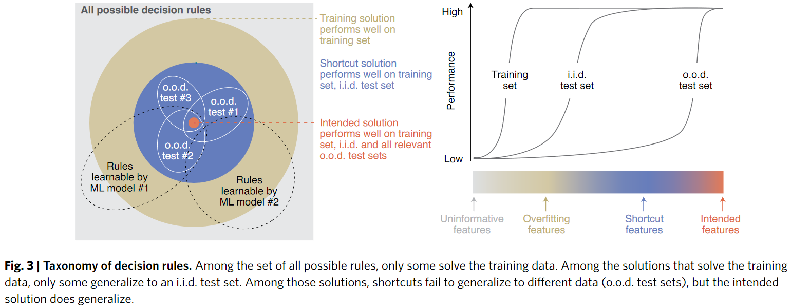

This essay reproduces the paper A simple and interpretable model of grokking modular arithmetic tasks (Gromov 2023a). The code is available on GitHub at yuxi-liu-wired/grokking-modular-arithmetics.
Setup
Given a natural number \(N\), we have modular arithmetic on \(\mathbb{Z}_N = \{0, 1, ..., N-1\}\). For example, \(\mathbb{Z}_{12}\) is the “clock face modular arithmetic”. The problem for our neural network is to learn binary functions on \(\mathbb Z_N\). That is, we are to learn a binary function \(f: \mathbb Z_N\times \mathbb Z_N \to \mathbb Z_N\).
Each such binary function can be exactly specified by a \(N\times N\) table, so there are \(N^{N^2}\) possible such functions. Most of them are completely random and uninteresting, both for us and for neural networks, but a few are very interesting, and modular addition is one such interesting function.
For example, modular addition on \(\mathbb Z_6\) has the following multiplicative table:
| + | 0 | 1 | 2 | 3 | 4 | 5 |
|---|---|---|---|---|---|---|
| 0 | 0 | 1 | 2 | 3 | 4 | 5 |
| 1 | 1 | 2 | 3 | 4 | 5 | 0 |
| 2 | 2 | 3 | 4 | 5 | 0 | 1 |
| 3 | 3 | 4 | 5 | 0 | 1 | 2 |
| 4 | 4 | 5 | 0 | 1 | 2 | 3 |
| 5 | 5 | 0 | 1 | 2 | 3 | 4 |
Since the entire dataset is known and specified in advance, we can define the train set ratio \(\alpha = \frac{|D_{train}|}{|D|}\), where \(D\) is the full dataset (the multiplication table), and \(D_{train}\) is the training dataset. We expect that, as \(\alpha\) approaches \(1\), the network becomes better at generalizing to the test set.
The network architecture we use has 3 layers:
- Input is \(x = [x^{(1)}, x^{(2)}]\). Both \(x^{(1)}, x^{(2)} \in \mathbb R^N\) are one-hot encodings of \(\mathbb Z_N\).
- Hidden layer activation is \(z = \phi(\frac{1}{\sqrt M} W^{(1)}z)\), where \(\phi\) is the activation function. Here \(z \in \mathbb R^M\) can be of any width.
- The output is \(y = \frac{1}{N} W^{(2)}z\), where \(y \in \mathbb{R}^N\) should be a one-hot encoding of \(\mathbb{Z}_N\).
- All entries of \(W^{(1)}, W^{(2)} \sim \mathcal N(0, 1)\) are initialized as standard gaussians.
- \(W^{(1)}, W^{(2)}\) are all the parameters of the network. There is no bias. Thus the network has \(3MN\) parameters in total.
In the paper, Gromov found that grokking occurs under different choices of activation functions \(\phi\), different training methods (SGD, Adam, etc.), and different training set ratios \(\alpha\).
The simplest example where grokking occurs is with
- Quadratic activation function: \(\phi(t) = t^2\).
- Full-batch gradient descent.
- MSE loss.
I used AdamW optimizer instead of standard gradient descent, since it converges faster. The dataset is formatted as an array of triples of the form \((x_1, x_2, y)\), interpreted as \(x_1 + x_2 = y \mod N\). I split the dataset randomly into two datasets.
Results
Grokking

Some observations:
- The test set accuracy curve decreases as the training set accuracy increases to perfection.
- The test set accuracy curve rises only after the training set accuracy is perfect. First slowly, then rapidly (“grokking”). This can be quite puzzling, since if the network has really achieved perfection on the training set, then there is nothing left to learn, and so it shouldn’t be able to improve any further – and yet it does improve.
- Perfect accuracy on the training set is reached at epoch 10x that of the training set.
- The learning curves show something smoother, but also something interesting: the training loss decreases monotonically, but the test loss rises, then decreases.
- For a while, the test loss rose while the test accuracy increased!
Some lessons:
- Grokking might look less dramatic when plotted not by argmax-accuracy, but by MSE.
- See for example (Power et al. 2022). One wonders what they would have found if they had plotted MSE losses instead of accuracies?
- (Nanda et al. 2023) does plot train and test loss, and in this paper, the grokking appears in the loss curves as well. This seems harder to understand using our small model (they used a Transformer).
- Train loss can decrease while test loss increase, but this trend can also be reversed. The shape of learning curves is quite complex.
Interpretation
Since the neural network is so small, we can interpret it. What kind of neural network did we end up with that could do modular addition?
Directly inspecting the weight matrices, we notice suggestive wavy bands that resemble sine waves.

Let’s sort them according to frequency, as found by running a Fourier transform and picking the highest peak:

We see that the learned neural network is probably doing some Fourier transform. This can be confirmed by plotting the activation map on every hidden neuron. Specifically, for each hidden neuron, we can calculate its activation for each of the \(N\times N\) possible inputs. This is plotted as a heatmap with \(N\times N\) pixels. We then get one heatmap per hidden neuron and display all of them in a grid:

We see that the network has learned some sine waves. It seems to be a robust fact that networks trained to do modular arithmetic, with one-hot encoding, learn to use trigonometry for this task. (the use of one-hot encoding seems very relevant, as noted here).
The null hypothesis
As a good comparison with the above interpretation of the neural network, we leverage the same tools on the “null hypothesis”. There are two ways to do the null hypothesis: either initialize the neural network randomly and then interpret it, or initialize it, train it to perform a randomly generated binary operation, then interpret it.
As one would expect, the neural network can successfully memorize arbitrary binary operations, without generalization (as there is no pattern to generalize).

For both null hypotheses, I tried interpreting them using the same methodology; they look as one might expect: complete noise.


Extensions
This toy is small and simple. It runs in a minute. Here are some ideas for playing with the toy:
- Modular multiplication.
- Random operation (as a null hypothesis).
- Different activation functions (sine, ReLU).
- Different accelerators (SGD, Adam, etc)
- Two hidden layers.
Some other quotes
Grokking modular arithmetic (Gromov 2023b)
In particular, random feature models such as infinitely-wide neural networks (in the NTK regime) do not exhibit grokking, at least on the tasks that involve modular functions.
In our minimal setup, the simplest explanation for grokking is that once training loss reached a certain value, the only way to further minimize it is to start learning the right features.
Shortcut learning in deep neural networks (Geirhos et al. 2020)
many of deep learning’s failures can be seen as different symptoms of the same underlying problem: shortcut learning. Shortcuts are decision rules that perform well on standard benchmarks but fail to transfer to more challenging testing conditions, such as real-world scenarios. Related issues are known in comparative psychology, education and linguistics, suggesting that shortcut learning may be a common characteristic of learning systems, biological and artificial alike.

The Bitter Lesson (Sutton 2019)
One thing that should be learned from the bitter lesson is the great power of general purpose methods, of methods that continue to scale with increased computation even as the available computation becomes very great. The two methods that seem to scale arbitrarily in this way are search and learning.
The Scaling Hypothesis # Why Does Pretraining Work?
Early on in training, a model learns the crudest levels: that some letters like ‘e’ are more frequent than others like ‘z’, that every 5 characters or so there is a space, and so on. It goes from predicted uniformly-distributed bytes to what looks like Base-60 encoding—alphanumeric gibberish. As crude as this may be, it’s enough to make quite a bit of absolute progress: a random predictor needs 8 bits to ‘predict’ a byte/character, but just by at least matching letter and space frequencies, it can almost halve its error to around 5 bits…
… a sample will state that someone is “alive” and then 10 sentences later, use the word “dead”, or it will digress into an irrelevant argument instead of the expected next argument, or someone will do something physically improbable, or it may just continue for a while without seeming to get anywhere.All of these errors are far less than <0.02 bits per character; we are now talking not hundredths of bits per characters but less than ten-thousandths.The pretraining thesis argues that this can go even further: we can compare this performance directly with humans doing the same objective task, who can achieve closer to 0.7 bits per character. What is in that missing >0.4?
The last bits are deepest. The implication here is that the final few bits are the most valuable bits, which require the most of what we think of as intelligence.